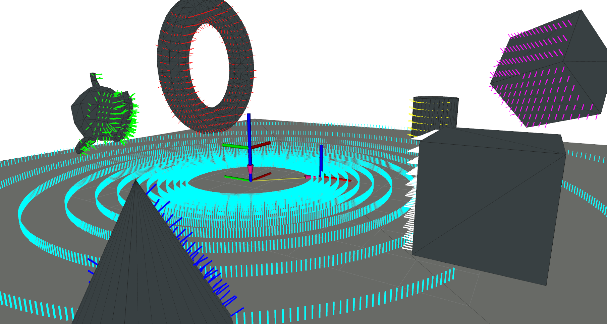

Simulation

Requirements
Once a map is loaded and a sensor is defined anything is known to simulate the first range data.
// Map
#include <rmagine/map/EmbreeMap.hpp>
// Sensor Models
#include <rmagine/types/sensor_models.h>
// Simulators
#include <rmagine/simulation/SphereSimulatorEmbree.hpp>
namespace rm = rmagine;
// ...
// loading a map
std::string path_to_mesh = "my_mesh.ply";
rm::EmbreeMapPtr map = rm::load_embree_map(path_to_mesh);
// defining a model
rm::SphericalModel velo_model = rm::vlp16_900();
// construct a simulator
rm::SphereSimulatorEmbree sim;
sim.setMap(map);
sim.setModel(velo_model);
// simulate ranges
// ...
Intersection Attributes
| Attribute | Type | Stride | Description |
|---|---|---|---|
| Hits | uint8 | 1 | If the a face was intersected (1) or not (0) |
| Ranges | float | 1 | Distance from ray origin along the direction to the first intersection |
| Points | float | 3 | Cartesian Coordinates of the Intersection (x,y,z) |
| Normals | float | 3 | Normal (nx, ny, nz) of intersected face |
| FaceIds | uint32 | 1 | The id of the face that was intersected |
| ObjectIds | uint32 | 1 | The id of the object that was intersected |
| GeomIds | uint32 | 1 | The id of the geometry that was intersected |
Handle Results
// ...
// Defined previously
// - namespace rm = rmagine;
// - SphereSimulatorEmbree sim;
// 100 Transformations between base and map. e.g. poses of the robot
rm::Memory<rm::Transform, rm::RAM> Tbm(100);
for(size_t i=0; i < Tbm.size(); i++)
{
rm::Transform T = rm::Transform::Identity();
T.t = {2.0, 0.0, 0.0}; // position (2,0,0)
rm::EulerAngles e = {0.0, 0.0, 1.0}; // orientation (0,0,1) radian - as euler angles
T.R.set(e); // euler internally converted to quaternion
Tbm[i] = T; // Write Transform/Pose to Memory
}
// add your desired attributes at intersection here
// - optimizes the code at compile time
using ResultT = rm::Bundle<
rm::Hits<rm::RAM>,
rm::Ranges<rm::RAM>
>;
// Possible Attributes (rmagine/simulation/SimulationResults.hpp):
// - Hits
// - Ranges
// - Points
// - Normals
// - FaceIds
// - GeomIds
// - ObjectIds
// querying every attribute with 'rm::IntAttrAny' instead of 'ResultT'
ResultT result = sim.simulate<ResultT>(poses);
// result.hits, result.ranges contain the resulting attribute buffers
std::cout << "printing the first ray's range: " << result.ranges[0] << std::endl;
// or slice the results for the scan of pose 5
auto ranges5 = result.ranges(5 * model.size(), 6 * model.size());
std::cout << "printing the first ray's range of the fifth scan: " << ranges5[0] << std::endl;
// slicing and other useful operations will be described at another Wiki page.